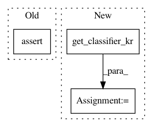

fc81d77c1e18719b58c2437e8408972ad90ce547,tests/classifiers/test_keras.py,TestKerasClassifier,test_defences_predict,#TestKerasClassifier#,194
Before Change
preds_check = self.model_mnist._model.predict(x_test_defense)
// Check that the prediction results match
self.assertTrue((preds_classifier - preds_check <= 1e-5).all())
def test_class_gradient(self):
(_, _), (x_test, _) = self.mnist
classifier = self.model_mnist
After Change
fs = FeatureSqueezing(clip_values=clip_values, bit_depth=2)
jpeg = JpegCompression(clip_values=clip_values, apply_predict=True)
smooth = SpatialSmoothing()
classifier_ = get_classifier_kr()
classifier = KerasClassifier(clip_values=clip_values, model=classifier_._model, defences=[fs, jpeg, smooth])
self.assertEqual(len(classifier.defences), 3)
preds_classifier = classifier.predict(x_test)
In pattern: SUPERPATTERN
Frequency: 5
Non-data size: 3
Instances
Project Name: IBM/adversarial-robustness-toolbox
Commit Name: fc81d77c1e18719b58c2437e8408972ad90ce547
Time: 2019-08-17
Author: beat.buesser@ie.ibm.com
File Name: tests/classifiers/test_keras.py
Class Name: TestKerasClassifier
Method Name: test_defences_predict
Project Name: IBM/adversarial-robustness-toolbox
Commit Name: fc81d77c1e18719b58c2437e8408972ad90ce547
Time: 2019-08-17
Author: beat.buesser@ie.ibm.com
File Name: tests/classifiers/test_keras.py
Class Name: TestKerasClassifier
Method Name: test_fit_image_generator
Project Name: IBM/adversarial-robustness-toolbox
Commit Name: fc81d77c1e18719b58c2437e8408972ad90ce547
Time: 2019-08-17
Author: beat.buesser@ie.ibm.com
File Name: tests/classifiers/test_keras.py
Class Name: TestKerasClassifier
Method Name: test_class_gradient
Project Name: IBM/adversarial-robustness-toolbox
Commit Name: fc81d77c1e18719b58c2437e8408972ad90ce547
Time: 2019-08-17
Author: beat.buesser@ie.ibm.com
File Name: tests/classifiers/test_keras.py
Class Name: TestKerasClassifier
Method Name: test_loss_gradient
Project Name: IBM/adversarial-robustness-toolbox
Commit Name: fc81d77c1e18719b58c2437e8408972ad90ce547
Time: 2019-08-17
Author: beat.buesser@ie.ibm.com
File Name: tests/classifiers/test_keras.py
Class Name: TestKerasClassifier
Method Name: test_layers